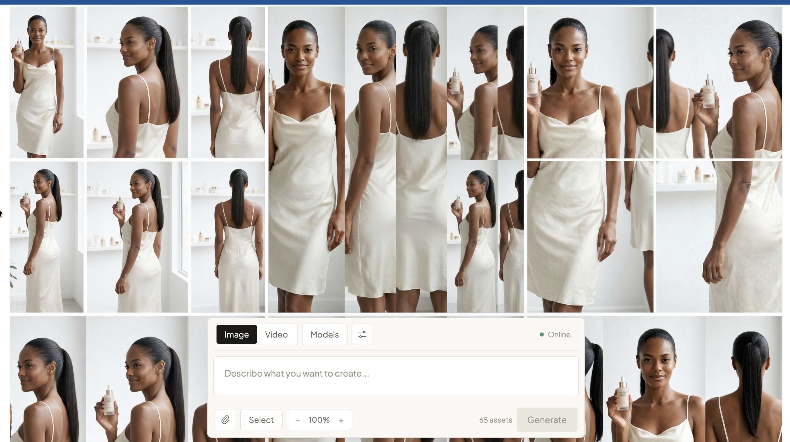

Full stack & DevOps engineer, founder · open to work
Chibuike
Henry.
Five years of writing the code and shipping it: iOS, web and backend systems, plus the CI/CD pipelines and cloud deployments that get them to production smoothly. I founded Silistudio, an AI creative studio on iOS and the web.
- 5+years full stack
- 5+years DevOps & deployment
- 3platforms: iOS, web, macOS
- 1live product people pay for
About.
Full stack engineer who also owns the pipeline: I write it, test it, ship it and keep it running.

BSc Software Engineering, Babcock University
MBA Technical Management, Kwantlen Polytechnic University
I started with iOS, writing UIKit interfaces and wiring them to backend APIs. I moved to the web and the server side at Body Secret, where I built the ecommerce backend in Java Spring Boot and PostgreSQL and the React storefront on top of it.
Since 2024 I've been building Silistudio: a SwiftUI app and a React app sharing one reactive Java backend, with AI image and video generation streamed over WebSockets and Stripe handling payments.
Alongside the code, I've spent five years on the other half of the job: DevOps. I build the CI/CD pipelines that test and ship every change, containerise services with Docker, and run the deployments, so code moves from a commit to production without drama.
These days I work with AI every day, both as the thing I build and as the way I build it. I pick the language to fit the problem: Swift for the phone, Java for the server, Python when it's a pipeline.
- Building
- Silistudio, on iOS and the web
- Stack
- Swift, React, Java (Spring WebFlux), Python, PostgreSQL
- DevOps
- CI/CD with GitHub Actions, Docker, Render, automated tests, health checks
- Also
- Supabase, Stripe, fal.ai, WebSockets, Claude API
- Writing
- Notes from the build
- Based
- Coquitlam, BC · open to remote
Work.
Three roles across iOS, web and founding. Open a row for what I did there.
01
Founder & Independent Contractor
Silistudio · Vancouver, BC
- Designed and built Silistudio end to end: SwiftUI on iOS, React on the web, and one Spring WebFlux backend serving both.
- Built streaming AI generation over WebSockets, with credit reservation so failed jobs never cost the user.
- Integrated Stripe Checkout and webhooks, Supabase auth and storage, and an in-browser video editor.
- Own the delivery pipeline: GitHub Actions tests and builds every push, the API ships as a Docker image to Render, and the web app deploys as a static site.
- Lead the developers and AI agents working on the product, and take on contract builds alongside it.
02
Web Developer
Body Secret
- Led the design and build of the ecommerce database in Java Spring Boot and PostgreSQL, so the team could upload and manage skincare products on the official site.
- Built an order tracking and receiving dashboard in HTML, CSS and JavaScript, giving real-time views of order status and inventory.
- Led the build of a responsive sales site in React, tuned to handle a significant increase in orders without slowing down.
03
iOS Developer Intern
Sprint Hub
- Designed and built client interfaces in Swift and UIKit, focused on usability and engagement.
- Refactored and extended an existing codebase, adding features and improving readability.
- Shipped weekly coding projects, including a mobile game and a file-sharing app.
- Implemented CRUD against backend APIs, keeping front end and back end in sync.
Projects.
Built at work and after it. Open a row for the problem, what I did, and what happened.
01
Silistudio
AI creative studio for images and video, on iOS and the web.
Problem
Making AI images and video meant juggling separate tools to generate, edit and keep the results.
What I did
Built one product for both: a SwiftUI app and a React app over a single reactive Java API, with results streamed live.
Result
A live product that people pay to use, not a demo.

Add a screenshot at img/silistudio.png
02
Body Secret — Rider App
Delivery dispatch and live tracking for a skincare brand.
Problem
Orders were phoned through to riders, with no visibility and no record of delivery.
What I did
Built a rider app, real-time dispatch and an ops dashboard on the same Spring Boot and PostgreSQL stack as the store, with status pushed over WebSockets.
Result
Replaced phone dispatch with live tracking the ops team uses daily.
03
Sentinel
macOS app that turns screen time into a searchable timeline.
Problem
Hours of work on screen leave no record you can search later.
What I did
Swift capture client with consent indicators and on-device blurring, a Java Spring backend streaming progress over WebSockets, and a multi-model AI pass extracting topics, tasks and links.
Result
A searchable timeline built automatically, with no manual notes and one-click delete.
04
Local Browser Assistant
Plain-English instructions, and Claude drives Chrome step by step.
Problem
Browser busywork is repetitive, but most automation tools send your data to someone else's cloud.
What I did
Built a local agent with approval gates before risky actions, per-tab chat history, site allow-listing, and page content treated as untrusted data.
Result
Real browser tasks automated locally; nothing leaves the machine except the model call.
05
AI Content Pipeline
One consistent model across a whole product catalogue.
Problem
Every AI generation produces a different person, but a catalogue needs the same face in every shot.
What I did
A Python pipeline with a locked character block reused on every call, and a two-pass generate-then-refine approach for realism.
Result
Gave one brand a full product catalogue without booking a studio shoot.
Writing.
Notes from the build: architecture, CI/CD and deployment, mistakes, and working with AI.
Have something
to build?
Full stack or DevOps work, in Metro Vancouver or remote. Send a note and tell me what you're working on.